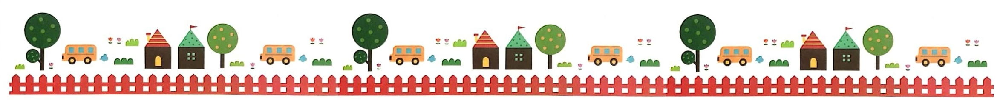

보육철학
- 무한한 잠재능력과 인격을 가진 영유아가 사랑과 존중을 받으며 건강한 자아와 창의성을 가진 조화로운 사회구성원으로 성장할 수 있는 기틀을 마련해 준다.
보육목표
- 올바른 기본생활 습관을 형성한다.
- 배려하며 협력하는 사회성 발달을 촉진 시킨다.
- 자신의 생각과 느낌을 창의적으로 표현하도록 한다.
- 몸과 마음이 건강하게 자랄 수 있는 경험을 한다.
- 사랑하고 감사할 줄 아는 사람으로 성장하게 한다.